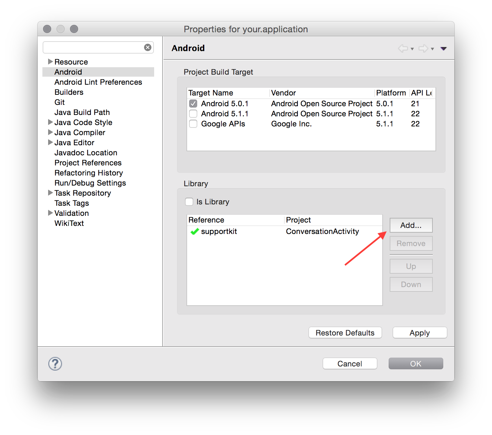
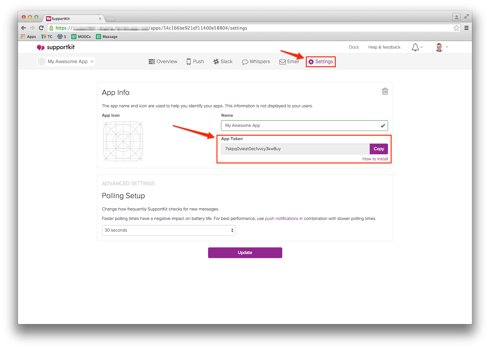

Welcome
SupportKit adds beautifully simple messaging to your app to keep your users engaged and coming back. If you want to learn more about SupportKit, then visit our website at http://supportkit.io or sign up here. This page provides in-depth documentation on SupportKit’s features and is meant to be a guide for developers integrating the SDK and app makers seeking to engage with their users.
Source code examples are provided for all of our SDKs, including both Objective-C and Swift for iOS. You can view code examples inline, and you can switch the programming language of the examples with the tabs in the top left.
For more in-depth details on SupportKit’s API check out our API reference. The API reference documents every method and property available through SupportKit. If you have any other questions, feel free to reach out to us here.
Adding SupportKit to your app
There are a few ways you can include the SupportKit plugin on your Android project.
The SupportKit library comes in both the AAR and JAR packages. The AAR package is the preferred one but if you are not using Android Studio, you will need to install the JAR. The current supported compiledSdkVersion must be at least 21.
Android Studio with Gradle

The SupportKit library is hosted on Bintray and is available on JCenter.
Setup JCenter as a repository.
repositories {
jcenter()
}
Add the dependencies right into your build.gradle file.
compile 'com.google.android.gms:play-services-gcm:7.5.0'
compile 'com.google.code.gson:gson:2.3.1'
compile 'com.squareup.okhttp:okhttp:2.4.0'
compile 'io.supportkit:core:latest.release'
compile 'io.supportkit:ui:latest.release'
Sync the Gradle project then add the necessary code to initialize SupportKit in your app.
Eclipse, Netbeans and the ant build system
Core and UI modules
On Eclipse, we need to retrieve our eclipse package to add SupportKit and our dependencies to your project. Also, we will need to manually add permissions and services to the manifest.
- Download the
supportkit-eclipse-x.x.x.zipfile from Bintray. The package is located inFiles/ui/x.x.x/supportkit-eclipse-x.x.x.zip. - Extract the zip and copy the
appcompatandsupportkitfolders to the root of your project.

In Eclipse, import both folders in your workspace as
Existing Android Code. After this step you should have two new projects added to your workspace namedandroid-support-v7-appcompatandConversationActivity.Expand the
android-support-v7-appcompat\libsfolder. Then on every library, right click on them andBuild Path>Add to Build Path.

Go to the properties of your project (i.e.
right-click>Properties). Then under the Android item, add a reference to the SupportKit’sConversationActivity.Add these permissions in AndroidManifest.xml:
<uses-permission android:name="android.permission.ACCESS_NETWORK_STATE"/>
<uses-permission android:name="android.permission.INTERNET"/>
<uses-permission android:name="com.google.android.c2dm.permission.RECEIVE"/>
- Add these services in AndroidManifest.xml:
<service android:name="io.supportkit.core.service.SupportKitService"/>
<service android:name="io.supportkit.core.GcmInstanceIDListenerService" android:exported="false">
<intent-filter>
<action android:name="com.google.android.gms.iid.InstanceID"/>
</intent-filter>
</service>
<service android:name="io.supportkit.core.GcmRegistrationIntentService" android:exported="false"/>
<service android:name="io.supportkit.core.GcmService" android:exported="false">
<intent-filter>
<action android:name="com.google.android.c2dm.intent.RECEIVE"/>
</intent-filter>
</service>
<receiver
android:name="io.supportkit.ui.notification.NotificationReceiver"
android:exported="false">
<intent-filter>
<action android:name="io.supportkit.NOTIFICATION"/>
</intent-filter>
</receiver>
- Add this activity in AndroidManifest.xml:
<activity android:name="io.supportkit.ui.ConversationActivity" android:theme="@style/Theme.SupportKit" />
- Follow these instructions to install the Google Play Services to your project.
Clean and build your project then add the necessary code to initialize SupportKit in your app.
Core module only
If you are planning on building your own UI and only use our API, you can integrate the core module only.
- In your project directory, create a subdirectory called libs if it does not already exist
- Copy SupportKit-core.jar into the libs directory
- Add these permissions in AndroidManifest.xml:
<uses-permission android:name="android.permission.ACCESS_NETWORK_STATE"/>
<uses-permission android:name="android.permission.INTERNET"/>
<uses-permission android:name="com.google.android.c2dm.permission.RECEIVE"/>
- Add these services in AndroidManifest.xml:
<service android:name="io.supportkit.core.service.SupportKitService"/>
<service android:name="io.supportkit.core.GcmInstanceIDListenerService" android:exported="false">
<intent-filter>
<action android:name="com.google.android.gms.iid.InstanceID"/>
</intent-filter>
</service>
<service android:name="io.supportkit.core.GcmRegistrationIntentService" android:exported="false"/>
<service android:name="io.supportkit.core.GcmService" android:exported="false">
<intent-filter>
<action android:name="com.google.android.c2dm.intent.RECEIVE"/>
</intent-filter>
</service>
Download and copy each dependency JAR into the libs subdirectory:
Follow these instructions to install the Google Play Services to your project.
Troubleshooting
If you get the following error when running your application
[2015-07-23 09:33:42 - Dex Loader] Unable to execute dex: Multiple dex files define Lio/supportkit/ui/BuildConfig;
[2015-07-23 09:33:42 - MainActivity] Conversion to Dalvik format failed: Unable to execute dex: Multiple dex files define Lio/supportkit/ui/BuildConfig;
The fix is:
- Eclipse project properties >
Java build path>Order and export - Uncheck Android private libraries.
See http://stackoverflow.com/a/26856255/213272.
Initialize SupportKit in your app
After following the steps above, your app is setup for working with the SupportKit SDK. Before your code can invoke its functionality, you’ll have to initialize the library using your app’s token.
This token is free and uniquely identifies your app and links it to the SupportKit backend that does the heavy lifting necessary to bridge the gap between you and your users.
You can find your token by logging into SupportKit and copying it from the settings page as shown below.

Once you’ve located your token, use the code below to initialize SupportKit.
Add the following line of code to your onCreate method on your Application class:
SupportKit.init(this, "YOUR_APP_TOKEN");
If you don’t have an Application class, we recommend that you create one to make sure SupportKit is always initialized properly. If you don’t have one, you can copy the following and save it to your application package.
package your.package;
import android.app.Application;
import io.supportkit.core.SupportKit;
public class YourApplication extends Application {
@Override
public void onCreate() {
super.onCreate();
SupportKit.init(this, "YOUR_APP_TOKEN");
}
}
You also need to declare your newly created Application class in the <application> tag in your AndroidManifest.
<application
android:name="your.package.YourApplication">
...
</application>
Displaying the SupportKit User Interface
Once you’ve initialized SupportKit, you’re ready to try it out.
Find a suitable place in your app’s interface to invoke SupportKit and use the code below to display the SupportKit user interface. You can bring up SupportKit whenever you think that your user will need access to help or a communication channel to contact you.
ConversationActivity.show(this);
You should also take the time to configure the push notifications setup.
Configuring push notifications
Push notifications are a great, unobtrusive way to let your users know that a reply to their message has arrived.
Step 1. Generate a GCM configuration file for your Android project
Go to Google’s cloud messaging documentation
Click on
GET A CONFIGURATION FILE(you will be prompted to sign in to your Google account if you are not already signed in)Follow the steps to generate your configuration file (for your package name, copy and paste the package used in your application’s AndroidManifest.xml file)
Enable Google Cloud Messaging to your Android project
At the end of the page, continue to Generate configuration files
Take note of the Server API Key and the Sender ID, we will need those in the second step
Download the
google-services.jsonfile generated by the tool and save the file at the root of your Android application
Step 2. Configure push notifications in SupportKit
Go to https://app.supportkit.io and log into your account.
Go to Settings > Android
Enter your Server API Key and Sender ID (which was retrieved earlier in Step 1)
Step 3. Configure Android application to accept push
Add the dependency to your project’s top-level
build.gradle:classpath 'com.google.gms:google-services:1.3.0-beta1'Add the plugin to your app-level
build.gradle:apply plugin: 'com.google.gms.google-services'Add the following permissions and uses-permissions to your
AndroidManifest.xmlfile (typically before the opening<application>tag):<permission android:name="<your_application_package>.permission.C2D_MESSAGE" android:protectionLevel="signature"/> <uses-permission android:name="android.permission.WAKE_LOCK"/> <uses-permission android:name="<your_application_package>.permission.C2D_MESSAGE"/>Add the following receiver to your
AndroidManifest.xmlfile before the closing</application>tag:<receiver android:name="com.google.android.gms.gcm.GcmReceiver" android:exported="true" android:permission="com.google.android.c2dm.permission.SEND"> <intent-filter> <action android:name="com.google.android.c2dm.intent.RECEIVE"/> <category android:name="<your_application_package>"/> </intent-filter> <intent-filter> <action android:name="com.google.android.c2dm.intent.REGISTRATION"/> </intent-filter> </receiver>
Step 4. Test it out!
Kill and restart your app.
Launch SupportKit.
Send a message.
Press the home button or navigate away from the conversation.
Reply to the message from your choice of SupportKit integrated service
You’ll receive a notification on the phone!
Users
User data
SupportKit allows you to specify profile information about your users so that you can better understand the context around a user’s message.
You can grab the current user with User.getCurrentUser then set basic information with setFirstName, setLastName, setEmail and setSignedUpAt. You can also set your own custom properties by sending a map into addProperties.
User skUser = User.getCurrentUser();
final Map<String, Object> customProperties = new HashMap<>();
skUser.setFirstName("Artour");
skUser.setLastName("Babaev");
skUser.setEmail("2ez@4rtz.com");
skUser.setSignedUpAt(new Date(1420070400000l));
customProperties.put("customDate", new Date());
customProperties.put("customFlag", true);
customProperties.put("customDigit", 322);
skUser.addProperties(customProperties);
Sensitive user data
SupportKit sends messages using standard encryption protocols, but in order to keep your users completely safe, the best way is to inform your users they should never send sensitive data through SupportKit messages, for example: credit card numbers, passwords, sensitive documents, and private photos.
Integrations
By default, all new SupportKit apps will have an email channel enabled using the email address of the account owner.
When users send you a message using SupportKit, you will receive an email at the configured address(es). This e-mail contains the user’s message, device information, and any profile information about the user that you captured in your app. You can respond to your user’s message by responding directly to the email.

Getting help from your team
If you want multiple team members to respond to your SupportKit requests, you can specify multiple email addresses, or use a mailing list. Whenever a team member replies, the incoming email address and associated name will be used to determine the team member displayed to the user alongside the message.
Slack
Slack is a new communication tool that combines the best things about chat, email and the web to group all of your team’s conversations and workflow into one beautiful, searchable place.
SupportKit has a revolutionary new Slack integration that allows your team to effortlessly speak to your app’s users, without leaving Slack. Check out this video to see how it works:
Configuring Slack
Step 1. “Authorizify” SupportKit so that it can talk to your Slack
Step 2. Set up a new “slash command” so that you can send messages to SupportKit

Step 3. Choose a “dispatch channel” to receive new message notifications from your app’s users
Once you’ve completed these 3 steps, you’re ready to start speaking to your users with Slack.
When users send you messages, SupportKit posts them to Slack. If it’s a new conversation, a notification will appear in the dispatch channel.
This notification contains a link to a channel associated to the specific user that sent you the message. From this channel you can get more information on the user and reply to their questions.
The messages you send in this channel are not automatically sent to your user. We do this so that you can invite teammates to read and collaborate on the user’s issue, without exposing your internal conversation.
When you’re ready to send a message to the user, simply use SupportKit’s slash command:
/sk TYPE YOUR MESSAGE HERE
This command will make SupportKit send your message directly to the app user. You’ll get a notification in the channel confirming that the transmission was successful.
If you want to consult any metadata you’ve associated with the user in order to aid the help process, simply use the command below to instruct SupportKit to display the most up to date metadata on a user.
/sk !profile
This section how to associate profile information about users.
Help Scout
Help Scout is a scalable, elegant and intuitive help desk solution. By connecting SupportKit to Help Scout, you can manage in-app conversations you have with your users directly from Help Scout. This way, you can use the same system to handle your team’s e-mail and in-app support channels. Unlike other Help Scout conversations, agent replies in conversations initiated by SupportKit app users won’t be sent by email, instead they will appear directly in the app.
Configuring Help Scout to work with SupportKit
Configuring Help Scout is super easy. All you have to do is copy/paste a Help Scout API key into our integration page.
Log in to your Help Scout account, go to “Your Profile” -> “API Keys” and generate an API key.
On the Help Scout page in your SupportKit admin, paste the API key into the field that says “Paste API Key here.”
Now, pick the mailbox you want to recieve app user messages in, and next time one of your users messages you using SupportKit, the conversation will appear in the Help Scout mailbox.

Instant messaging from a Help Scout mailbox
You can change or delete the Help Scout mailbox that SupportKit sends messages to, but you should note that conversations will not automatically migrate to the new mailbox. You must move the conversations you wish to have in the new mailbox via the Help Scout UI. Otherwise they will continue in the previously configured mailbox. Update your settings before deleting a Help Scout mailbox. If the mailbox configured on SupportKit no longer exists, messages will be lost.
Zendesk
Zendesk is a CRM platform specialized in managing support tickets. Our Zendesk integration combines all the advantages of in-app messaging with a powerful CRM back-end.
Configuring Zendesk ticketing
Configuring SupportKit to communicate with Zendesk is easy. Go to your app settings on the SupportKit admin page, and in the Zendesk settings, enter your Zendesk subdomain and click on the authenticate button.

In order to maintain all your interactions with an app user under a single Zendesk End-user profile, it’s important to set the email of your user in your app’s SupportKit integration.
Configuring agent images
You can set an agent’s image in your app (as pictured below) by creating a Gravatar image associated with the agent’s email address.

Working with Zendesk email signatures
SupportKit automagically removes agent’s personal signatures from messages. Global signatures can be set, but must be prefixed with --, if they aren’t, you’ll see them appear in SK message bubbles, and it can be unsightly.

Optional additional information on Configuration
Once you are authenticated with your Zendesk app, SupportKit will automatically configure targets and triggers so that your Zendesk agents can communicate with your SupportKit app users.
During the configuration process any existing triggers in your Zendesk settings will be modified to not email the End-user if the ticket is tagged “supportkit”. We do this to avoid duplicating the conversation, and to remove any reason for the app user to leave your app to respond via email.
It’s suggested that you don’t modify the targets and triggers that SupportKit configures for you on Zendesk. However, if you do, and anything ever goes wrong, it’s easy to fix. Just return to your app settings on the SupportKit admin page and in the Zendesk settings click “Remove Integration.” Re-adding the integration will remove previously configured SupportKit targets and triggers and refresh your configuration.
Note: SupportKit only ever configures one target and trigger per a Zendesk subdomain. In the event that multiple apps, or even mutliple SupportKit accounts are authorized for a Zendesk subdomain, the triggers and targets will not be removed until all SupportKit apps have had the Zendesk integration removed.
Rate Limiting
Zendesk limits each account to 200 requests per a minute (globally). Additionally, they only allow 15 comments to be made on each individual ticket (regardless of whether the comment is an agent or app user) within a 10 minute period.
In the unlikely event that a conversation surpasses the rate limit, the agent will recieve a message in the Zendesk UI saying as much, and preventing the ticket from being updated for a certain period of time, usually around 6 minutes. Your app user’s messages will be queued up and sent after the time period specified by Zendesk.
To reduce the likelihood of you bumping up against the rate limit, SupportKit batches together all messages sent from the app user within a 5 second period into a single comment.
Connecting to your CRM
SupportKit’s been designed to fit into your existing workflow so you can focus on speaking to your users and take advantage of whatever medium makes you most effective.
In addition to deep integration with Zendesk, since SupportKit uses e-mail to manage its communication, it’s easy to use your favourite CRM to manage incoming conversations as tickets if you want to benefit from the additional tools this allows.
Take note of the e-mail address that the CRM uses to receive new support requests.
Set SupportKit’s forwarding address to the address you noted in step 1.
Turn off any kind of signatures or annotations in your CRM to ensure that users receive a concise chat bubble when you reply.
Getting conversations started
SupportKit allows you to reach out to your users at scale so that you can start conversations with them about anything that matters to your app, even if they aren’t in need of service or support. We call this feature “Whispers” and it allows you to automatically send a message to a targeted group of users at exactly the right time.
To help get you started, we’ve built in 3 basic templates and also allow you to create your own using any custom metadata that you’re capturing with the SupportKit User API.
Welcome Whisper : Welcome new users to your app by starting a conversation where you can answer pressing questions and get initial feedback.
Re-Engage Users : Send a message to users who were last seen using the app at least 7 days ago.
Announcement : Send a message to all users when they launch the app.
You can start from any of these templates and customize it to meet your needs. You can also create a custom Whisper from scratch and go beyond these templates. You can use Whispers to ask for reviews from your most engaged users at the right time, you can notify users of older versions of your app about new versions, and more.
How do Whispers work
You create Whispers from within the SupportKit dashboard by specifying which users should receive your message, the message you’d like to send to your users and the event that should trigger delivery of this message. For example, to create a Whisper that would check in to see how users are doing 2 days after installing an app, you’d create a custom Whisper with these settings:

Targeting a group of users
You can target your users based on any information that you’ve stored using the SupportKit User API. We also provide several built-in properties that you can use without instrumenting your app with calls to SupportKit User class.
All users : Send the Whisper to everyone that has your app. Whispers that target everyone must be linked to an event.
Signed Up : Send the message before/after a specified number of days. For example, you can use this to send a message to all users who’ve been using your app for less than a day or more than a week. See here for more information.
Last Seen : Send the message based on when the user last interacted with your app. This value is updated automatically each time a user launches your app.
App Version : Send the message to users who are using (or not using) a specific version of your app. The value for this property is taken from the CFBundleShortVersionString key in your app’s info.plist file, and is updated each time the user launches your app.
In order to create Whispers based on properties you’ve defined using the SupportKit User class, you’ll need to run your app and ensure that at least 1 of your users was tagged with the property you want to base your Whisper on. For more information on using custom properties, read our documentation on the subject.
Personalizing the message text
You can personalize the message that’s being sent with the first or last name of the user. To do this, simply use the syntax {{firstName || fallback }} when creating your message. If the user’s firstName hasn’t been set by your code through the SupportKit User class then the placeholder will be replaced with the string specified as fallback.
When are Whispers sent
Whispers can be sent either when a specified event occurs in your app or when a user’s profile information matches the criteria of the target group.
Whispers that are based on custom events defined by you in your app are tied to the execution of the SupportKit track: method. When track: is called, SupportKit will check to see if the associated Whisper has already been seen by this user. If it hasn’t, the Whisper will be immediately presented to the user through an in-app notification that leads to the messaging interface when tapped. When you create a Whisper, SupportKit will display a preview of this in-app notification.
SupportKit.track("item-in-cart");
SupportKit.track('item-in-cart');
[SupportKit track:@"user-on-promopage"];
SupportKit.track("user-on-promopage");
If the Whisper is not tied to an event, SupportKit will monitor your userbase for changes and dispatch Whispers when a user’s properties make them a fit for the target group of your Whisper. In many cases, this occurs when the user is not using your app. For instance, if you elect to send a Whisper to new users after 1 day has elapsed, SupportKit will deliver the message approximately 24 hours after the user first used your app. If you choose to use this powerful method of Whisper delivery, ensure that you’ve enabled push notifications for your app in SupportKit. With push enabled, your users will receive a message that will bring them back into the conversation, even if they’re not using your app.
Note that users need to be prompted and accept to receive push notifications. To make sure we don’t prompt the user at a bad moment, SupportKit will only request permission to send push notifications after a user sends his first message and only if the prompt wasn’t shown earlier by your app. To get the full power of Whispers, we recommend you prompt for push permission as early as possible.
Managing Whispers

Once you’ve created a Whisper you can manage it from within the SupportKit web interface. By clicking on the “Whispers” link in the navigation bar, you’ll be presented with a list of Whispers as well as the number of users who have been exposed to them while running your app.
You can pause Whispers at any time. When you do so, the Whisper will not be shown to any more users until you mark it as active by clicking “Resume”.
Customization
Strings customization
SupportKit lets you customize any strings it displays by overwriting his keys. Simply add res/values/strings.xml file in your Android project and specify new values for the keys used in SupportKit. You can find all available keys by browsing to the ui-x.x.x/res/values/values.xml file in the External Libraries in Android Studio.
Dates shown in the conversation view are already localized to the user’s device.
<resources>
<string name="SupportKit_activityConversation">Messages</string>
<string name="SupportKit_startOfConversation">This is the start of your conversation with the team.</string>
<string name="SupportKit_welcome">Feel free to leave us a message about anything that\'s on your mind.</string>
<string name="SupportKit_messageHint">Type a message…</string>
</resources>
Styling the Conversation Interface
Using a colors.xml file in your res/values folder, you can change the colors used by SupportKit:
<resources>
<color name="SupportKit_accent">#9200aa</color>
<color name="SupportKit_accentDark">#76008a</color>
<color name="SupportKit_accentLight">#be7cca</color>
<color name="SupportKit_backgroundInput">#ffffff</color>
<color name="SupportKit_btnSendHollow">#c0c0c0</color>
<color name="SupportKit_btnSendHollowBorder">#303030</color>
<color name="SupportKit_header">#989898</color>
<color name="SupportKit_messageDate">@color/SupportKit_header</color>
<color name="SupportKit_messageShadow">#7f999999</color>
<color name="SupportKit_remoteMessageAuthor">@color/SupportKit_header</color>
<color name="SupportKit_remoteMessageBackground">#ffffff</color>
<color name="SupportKit_remoteMessageBorder">#d9d9d9</color>
<color name="SupportKit_remoteMessageText">#000000</color>
<color name="SupportKit_userMessageBackground">@color/SupportKit_accent</color>
<color name="SupportKit_userMessageBorder">@color/SupportKit_accentDark</color>
<color name="SupportKit_userMessageFailedBackground">@color/SupportKit_accentLight</color>
<color name="SupportKit_userMessageText">#ffffff</color>
</resources>
If you need to update the image of the Send button, simply add an image with the following name to your drawables:
supportkit_btn_send_normal.png
You can find the original resources by browsing external libraries through Android Studio.